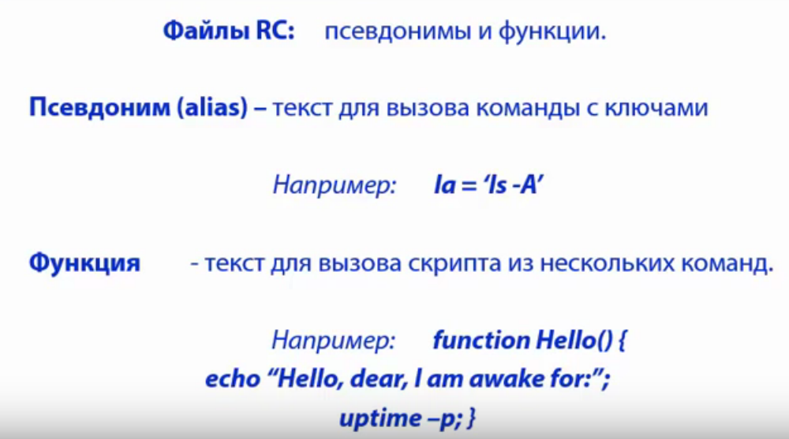

Профили
etc/profile - настройки для всех пользователей
$HOME/.bashrc - настройки для локального пользователя, текущего
Псевдонимы и функции

Примеры
alias ls='ls --color=auto'
#alias dir='dir --color=auto'
#alias vdir='vdir --color=auto'
alias grep='grep --color=auto'
alias fgrep='fgrep --color=auto'
alias egrep='egrep --color=auto'
При создании своего псевдонима необходимо выйти из оболочки чтобы изменения применились
Функции, пишем скрипт для отработки нескольких команд
Так же можно передать в функцию аргументы $1 - первый аргумент
Создание bash скрипта
Скрипты знать очень полезно - можно автоматизировать работу при наборе больших команд
#!/bin/bash
date
uptime
Нужно прописать в переменной $PATH а там пути где система ищет исполняемые файлы
например это
bash: /home/alexey/
.phpbrew/bin:
/usr/local/sbin:
/usr/local/bin:
/usr/sbin:
/usr/bin:
/sbin:
/bin:
/usr/games:
Как прописать путь к скрипту
PATH = $PATH:/home/bin/code
Условные выражения
Подстановка команд
x = $(ls -la)
или
x = `ls - la`
Циклы